User Guide¶
Configure Wizard¶
Wizard Site¶
Once Wizard is downloaded and installed, you need to set the location of the Wizard Site. The Wizard Site contains user and project data necessary for the operation of the pipeline.
Note
If your working on network and want to allow a multi-user work around your projects you must create the Wizard Site on this network and ensure that all the future user have an acess to this folder.
Warning
It’s important to choose the location of the Site correctly: once the datas are created within this folder by Wizard, they will not have to be deleted to ensure optimal operation of the pipeline.
To choose the location of the Wizard Site, fill in the text field provided by the path of the folder of your choice and click on accept.
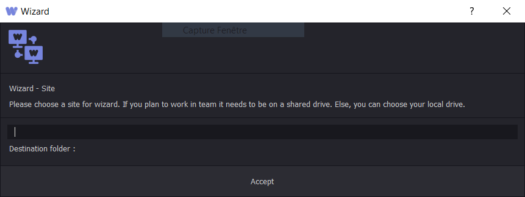{kind=link}
Create your user¶
Once the Wizard Site is created, the Sign in / Sign up window will open.
Before using Wizard, you must create a user if don’t have one.
If your running Wizard for the first time, click on Sign up otherwise click on Sign in to login using your personal login and password.
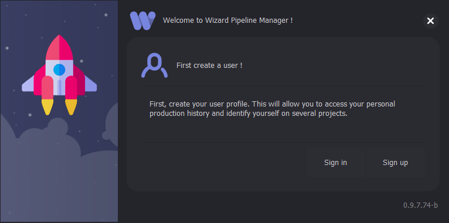{kind=link}
If you’re already using Wizard, you can create a user from the user tab by clicking on new.
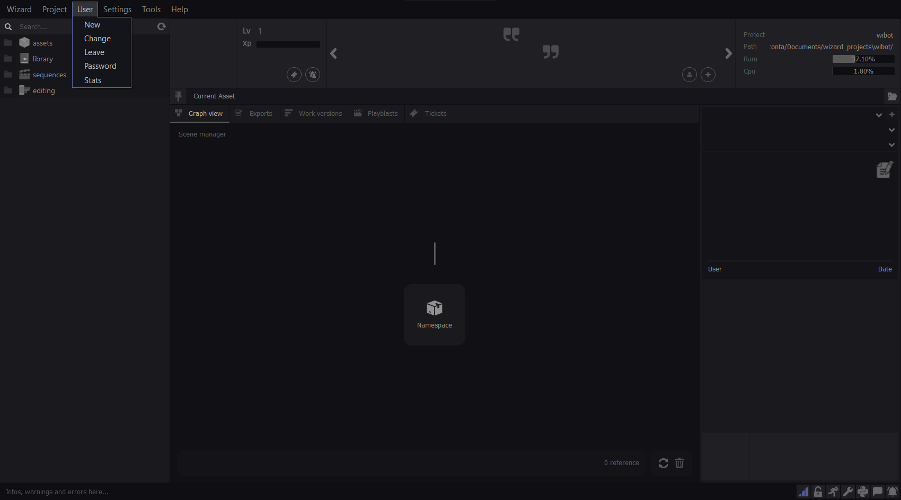{kind=link}
From the same menu you can also change your user and login on the same project with another user. Click on change and select your user in the list enter the password corresponding to the selected user.
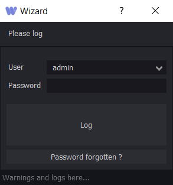{kind=link}
To create a user fill up the user form by entering your nickname, your first and last name, your password, your class, your e-mail address, and your photo. Check the administrator box if you want to be an admin.
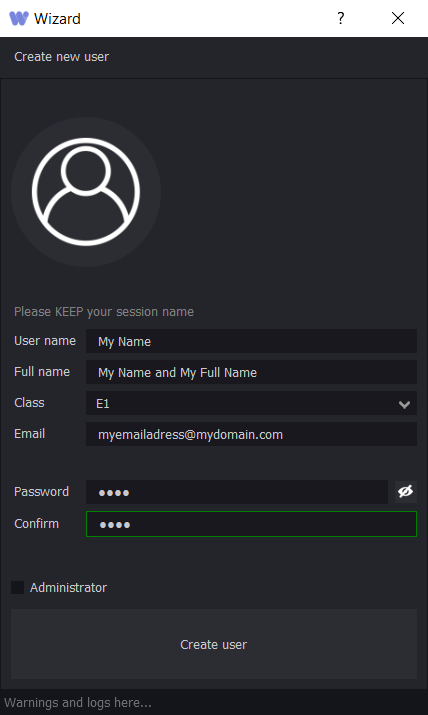{kind=link}
Note
Being an administrator gives you the right to modify, delete and edit preferences files within the pipeline. It is strongly recommended to have one administrator per project.
Warning
Beware, some administrator operations are irreversible.
A confirmation email containing a code is sent to the email address linked to your user. Confirm your user’s creation with this code.
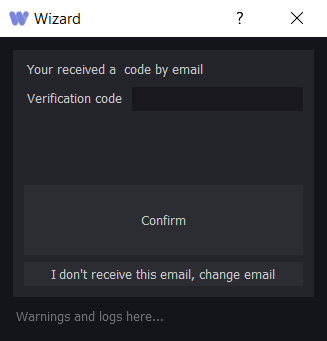{kind=link}
Create, Open and Merge your project¶
Now that your user is created, you will need to open or create a project if don’t have one. If your running Wizard for the first time, the creation project window will open.
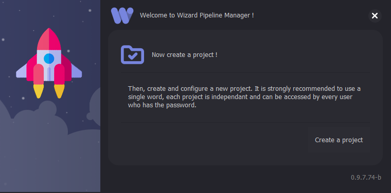{kind=link}
Click on create project.
If you’re already using Wizard, you can create a project from the project tab by clicking on new.
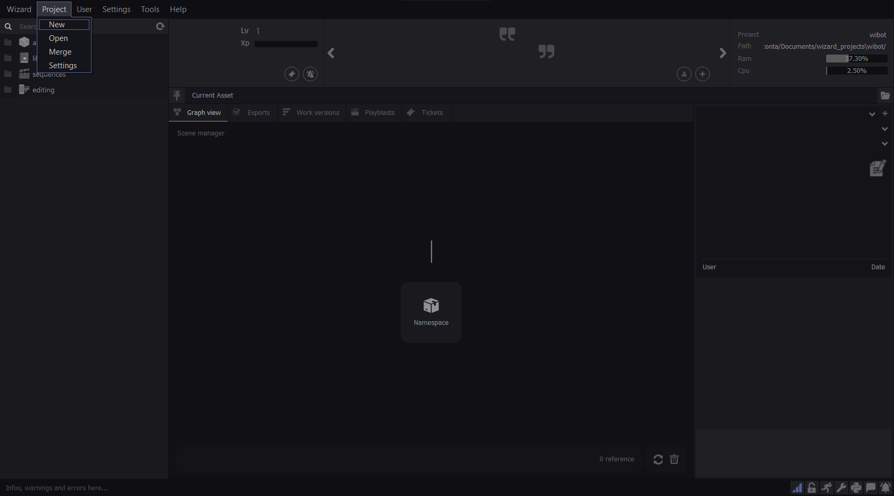{kind=link}
To create a project, you will need to fill up the project form.
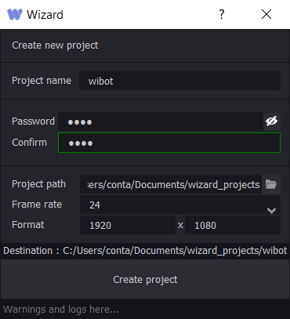{kind=link}
Set the name of your project. Set the password of your project. Adding a password to a project ensure that any user who want to connect to a project may have an authorization from one of the user already connected to the project.
Set the project path of your project.
Note
If your working on network and want to allow a multi-user work around your projects you must choose a path on this network and ensure that all the future users have an acess to this folder.
Set the frame rate and the frame format.
Merging a project in the Wizard Site is very usefull. It can be necessary if you’re receiving a Wizard project from a third person or if the link between a project you ave created and Wizard has been broken. This project won’t be available, to be connect on, in your project list.
In the project tab, click on merge: The merge project window will open.
Copy/Paste the project location in the text box, add the project password and confirm it. Wizard will then process the merge and your project will be available from the project tab of the Wizard UI.
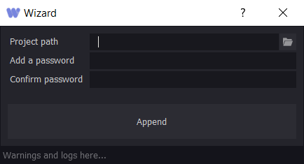{kind=link}
Warning
Beware, merging a project required that this project has been made under the same version of you Wizard version. If not, it may result in data loss.
Softwares Settings¶
After creating your user and a project, you are ready to start using Wizard.
Before creating an asset, you must fill in the software paths in the software settings. The location of each software depends on the installation you have done.
In this example, the maya softwares settings are set.
You can also add environnment variables and custom scripts paths. They will be loaded when you launch the software from the Wizard Launcher.
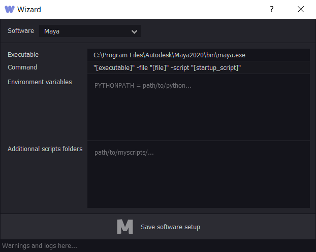{kind=link}
Note
The software settings are written in the project settings. Each user connected to your project must have the same software installation. This ensure the Launcher to work. It is recommended to do a default installation of your software in order to guarantee the same software location between each user. Make sure each user have an access to the custom scripts and have the same environment variables set in this windows otherwise they won’t be loaded.
Working with Assets¶
Once Wizard is configured you’re ready to work on your asset.
As shown in the outliner, within your Wizard project dissociates several parts of your production. The Asset part of the Outliner is one of the fourth major production part. It contains all the production stages from the design to the look development, trough design, modeling, texturing, grooming, and rig.